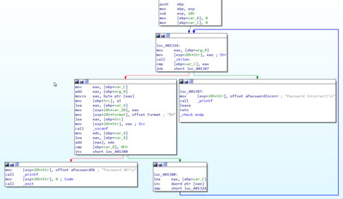

IOLI Crackme 0x04
I am continuing my reverse engineering review by tackling the IOLI crackmes by @pof. These are beginner friendly challenges that is perfect for newbies or for those who want to review the basics like me. Check out my writeups for 0x00, 0x01, 0x02, and 0x03.
Getting the password
Loading the program in IDA revealed something new. There is now a _check function that when opened looks more complicated than the previous challenges.

The one thing that I immediately noticed is the call to the _strlen function similar to the previous challenge. This means that the length of the input string plays another important role.
One curious thing is the condition that leads to the "Password Incorrect" block, as shown below.

call _strlen
cmp [ebp+var_C], eax
jnb short loc_401387
From the looks of it, the check will fail if var_C (Which is our var_counter from the previous challenge) reaches the …